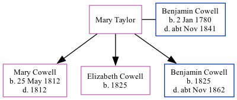

Mary Ann Cowell (née Taylor)
[ Home ] | [ Calendar ] | [ Surnames Index ] | [ Family History ]Mary Taylor, the wife of Benjamin Cowell (the four times great-uncle of Nigel Horne) andhad 3 children, Mary Ann, Elizabeth and Benjamin.
Children
- Mary Ann was born on May 25, 1812
- Elizabeth was born in 1825
- Benjamin was born in 1825
Family Tree
Generated by Ged2Site. Last updated on Apr 1, 2025